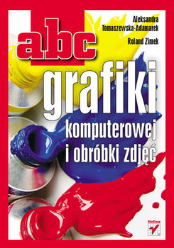
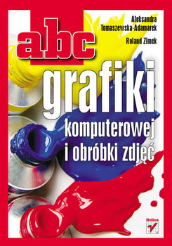

Natenczas Wojski chwycił na taśmie przypięty Swój róg bawoli, długi, cętkowany, kręty Jak wąż boa, oburącz
do ust go przycisnął, Wzdął policzki jak banię, w oczach krwią zabłysnął, Zasunął wpół powieki, wciągnął w
głąb pół brzucha I do płuc wysłał z niego cały zapas ducha, I zagrał: róg jak wicher, wirowatym dechem
Niesie w puszczę muzykę i podwaja echem.
Umilkli strzelcy, stali szczwacze zadziwieni Mocą, czystością,
dziwną harmoniją pieni. Starzec cały kunszt, którym niegdyś w lasach słynął, Jeszcze raz przed uszami
myśliwców rozwinął; Napełnił wnet, ożywił knieje i dąbrowy, Jakby psiarnię w nie wpuścił i rozpoczął łowy.
Bo w graniu była łowów historyja krótka: Zrazu odzew dźwięczący, rześki: to pobudka; Potem jęki po jękach
skomlą: to psów granie; A gdzieniegdzie ton twardszy jak grzmot: to strzelanie.
 
